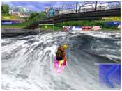
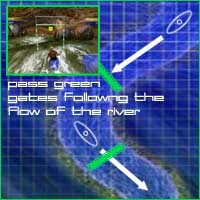
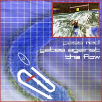
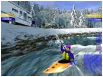
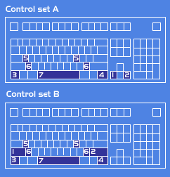

Getting started

There's only one aim in "Kayak Extreme": beat the required time on a course in order to proceed.
To begin with you must complete "Training".
In order to access the main part of the game, you have to complete the training
course in 1 minute, or less.
You have one Kayak type and one choice of paddle. The challenge begins with
a countdown, after which it's just you and your kayak against the flow of water!
(Hint: You can return to the training route as often as you wish. After
completing it once, your progress is recorded so that the next time you take the
challenge you can race against your previous best time, visually, as a "ghost"
of your former run will be retained for you to compete against.)
 Every course consists of a set number of "gates" (Starting at #1), through which
the kayak must pass in order to avoid a penalty. The number varies for each
challenge, but the rules are the same - gates must be navigated in numerical,
ascending order, #1, then #2, etc.
There are two types of gate: Green & Red (identified by the horizontal coloured
bars that run down their length). See the images below for more information.
Every course consists of a set number of "gates" (Starting at #1), through which
the kayak must pass in order to avoid a penalty. The number varies for each
challenge, but the rules are the same - gates must be navigated in numerical,
ascending order, #1, then #2, etc.
There are two types of gate: Green & Red (identified by the horizontal coloured
bars that run down their length). See the images below for more information.
To pass a Green gate successfully, the kayak should go through the gate facing forward.
To pass a Red Gate, the kayak must first pass the gate, on either side, and then
turn to re-enter the gate, so that the craft is facing back up towards the start.
  
Hint: Above each gate is a number. If this number has a diagonal line through
it, then it's a reverse (red) gate.
If a gate is missed, then a five second penalty will be incurred when the Kayak
reaches the subsequent gate. Hence if you miss gate #1, you'll get a penalty
when you negotiate gate #2. If a reverse gate is missed, this penalty is increased to 15 seconds.
There's nothing to prevent the player returning to a missed gate and
negotiating it correctly, provided that they have passed no later gate before
doing so. Time is of the essence, however, and often it's better just to take
the penalty if it's going to cost you more than five seconds to return to the gate you missed.

The course is complete when the player crosses the finish line. Any penalties
incurred will be added to your overall time for the route. If your time (with
penalties) exceeds the target set for the challenge, then you fail the level and
cannot proceed to the next course.
To begin with, the times required are quite easy, but become harder as you progress.
There are three levels of difficulty, and therefore three decreasing amounts of
time in which you must navigate the route. The positions of the gates also vary,
to provide more of a challenge as your skill increases.
In addition to opening new courses, your successful completion of some levels will
open up new Kayaks and paddles. The performance of each craft differs, and it's up to
you to choose the kayak and paddle combination that suits you best. What works for
you once, may not necessarily suit you again.
Controls
Kayak Extreme can be played with a keyboard or game pad. The nature of the
game doesn't really suit Joysticks, so we've deliberately not included these devices as an option.

There are TWO sets of controls available - Control set A and Control set B
Control Set "A"
Hold down both left (1) and right (2) cursor buttons to move the Kayak forward -
alternate oar strokes will occur provided both keys are held down.
Holding the right cursor (2) only, will stroke the left oar, thus turning the
Kayak gradually right.
Holding down the left cursor (1) only will stroke the right oar, thus turning
the Kayak gradually Left.
Using left Ctrl (3) with the left cursor key will turn the Kayak sharply left
Using right Ctrl (4) with the right cursor key will turn the Kayak sharply right
Control Set "B"
Hold down both left and right shift to move the Kayak forward - alternate
oar strokes will occur provided both Shift keys are held down
Holding the right shift only, will stroke the left oar, thus turning the
Kayak gradually right
Holding down the left shift only, will stroke the right oar, thus turning
the Kayak gradually left.
Using left Ctrl will turn the Kayak sharp left
Using right Ctrl will turn the Kayak sharp right
In either control mode, pressing the Space bar (7) activates Turbo Mode.
Using either control set, you can execute special tricks:
Eskimo Roll - executed by pressing the 'A' or ';' keys (5). This move can help you through the
back flowing rapids, and can be used to roll under obstacles blocking your path.
Pirouette - executed by pressing the 'Z' or '/' keys (6). Executing a pirouette
speeds you through water flowing against you.
When engaging the "turbo", a power bar appears on the right of the screen as an
indicator to the player of the remaining time for the stroke.
When this bar is exhausted, the effect of the turbo disappears. The power meter
will then recharge itself, during which time it cannot be activated.
F8 = Invert paddle keys
ESC = Pause menu
With the game paused, the user has the choice of:
CONTINUE - Carry on with the current level
RESTART - Start the current level again
EXIT TO MAIN MENU - Quit the current level and return to Main Game menu.
NB: Users with Microsoft Natural Keyboards - Using control setup 2 you may find
that the shift key fails to function as normal. We advise users with these devices to use control setup 1.
Gamepad
Please ensure your gamepad is correctly configured under Windows before starting the game:
- Click on "START" on the Windows Desktop
- Select "SETTINGS" from the menu that appears
- Double-click on CONTROL PANEL
- Double-click on GAME CONTROLLERS
- There are two "tabs" to the panel that now appears: General & Advanced.
- On the "General" tab, ensure that your device is reported and identified as
working "ok".
- To add your device, click on ADD and select the controller from the list
that appears.
- If your controller does not appear in the drop-down list then you need to
install the drivers that came with your device in order for Windows to
recognize it.
- On the "Advanced" tab, ensure that your device occupies the first available
slot (ID 1). To change the order of any device in this list, simply click on
the "change" button and type a new ID number at the flashing cursor
position.
- Click on "OK" to finish and return to the Windows Desktop.
Once in the game, go to the controls section and change your default control
setting (usually KEYBOARD) to Gamepad.
|